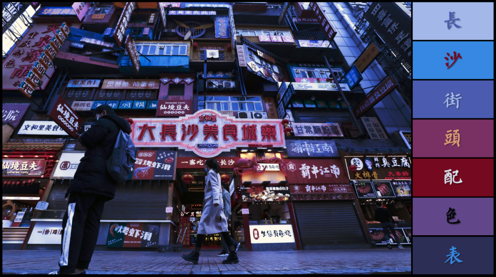
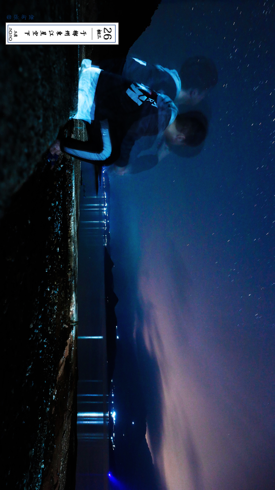
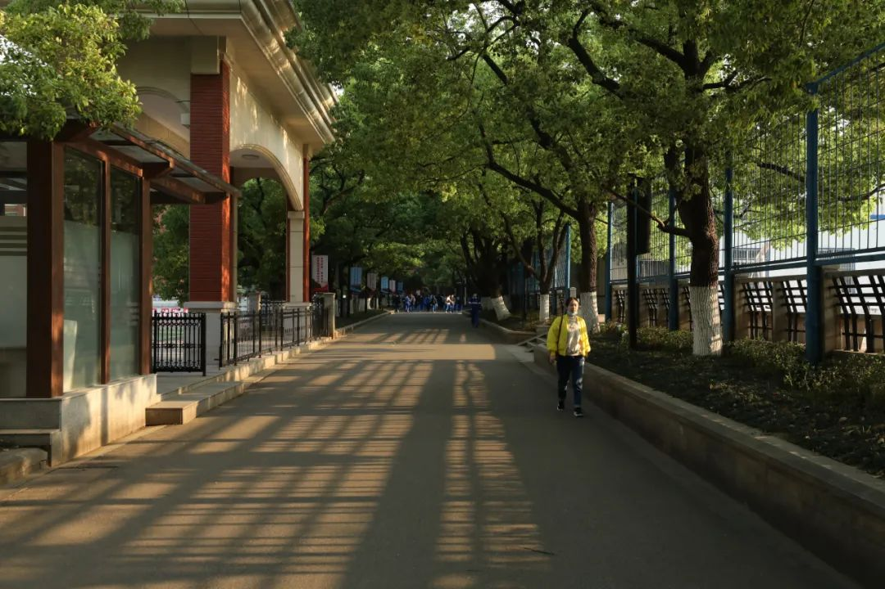
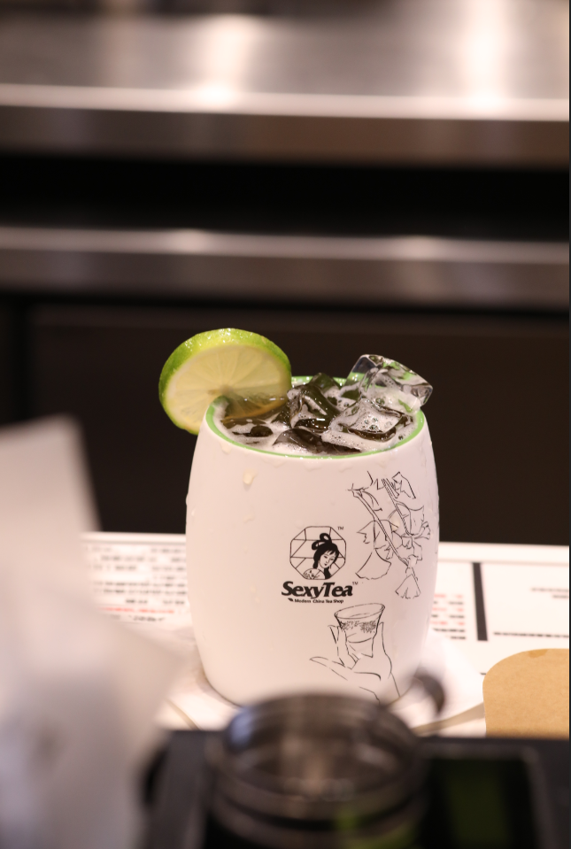
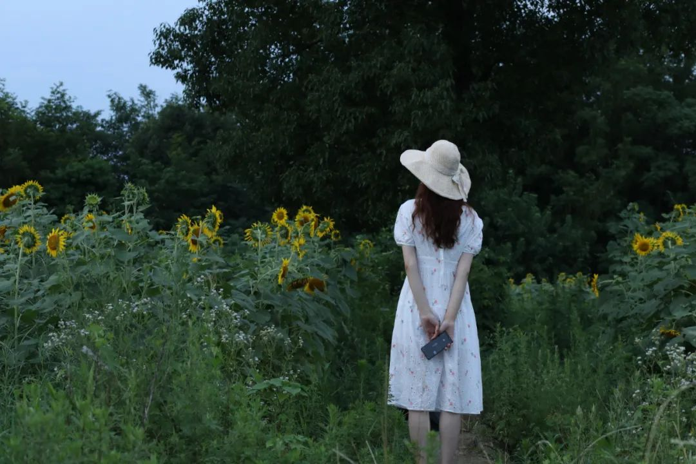
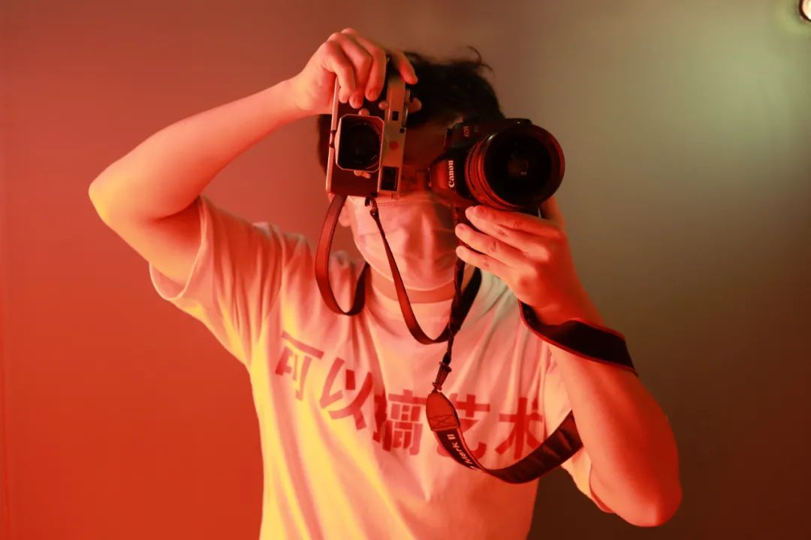
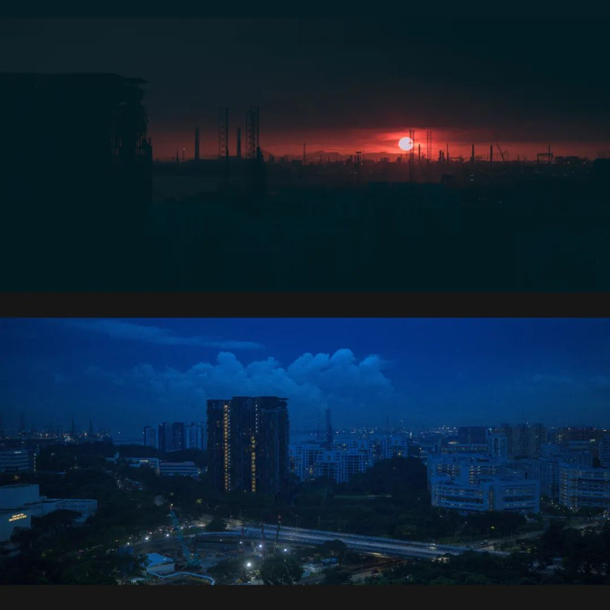
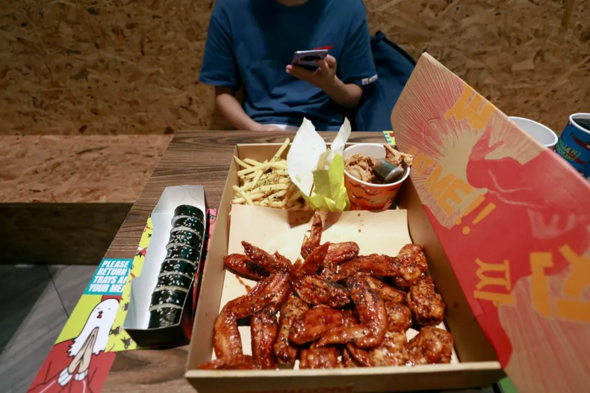
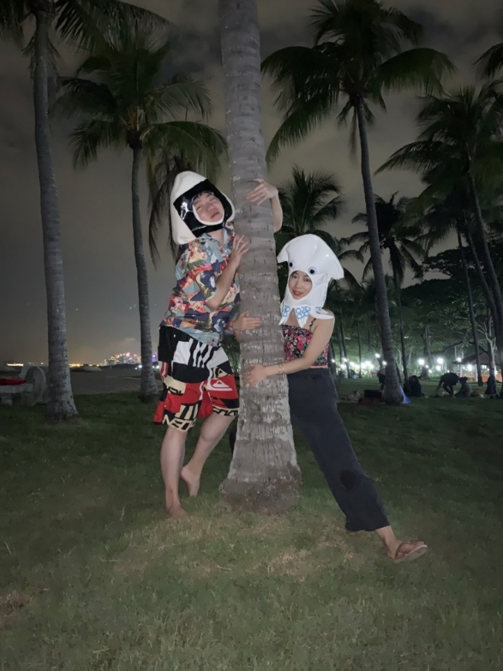

本文是张衔瑜第178篇推文 共计11566个字，100张图
那天我发了一条朋友圈，是这样写的：
我若不是二十岁，断然不可能五点半醒来，和各位出门，起底武汉市过早江湖。
往返3镇，辗转5家早餐店，行程116公里，按下快门399次。
希望一直有好事发生吧！
作为武汉的大学生，这时候我们知道有事发生，但是不知道有多大的事。跨年的活动我们取消的取消，没去参加的没去参加。蛰伏了几天，写毕业设计的开题报告，看看好像没什么事，就又戴上口罩出门了去。
选图来自三镇民生甜食馆、平和打包厂、严老幺重油烧麦。
三镇民生甜食馆其实是一家吃早餐的店（当然武汉的早餐可以扎实得连中饭也不想吃所以完全可以当正餐）
平和打包厂真的很好看，可以当做餐后消食的去处
倒是严老幺重油烧麦，我觉得最推荐的是这个三鲜豆皮。而且实际上这个店名是在文字骗人，去点单的时候，会发现道地的点法里，写作读作都是“烧梅”接下来的事情都交给汾酒省的朋友
还记得那天中午吃的荟聚一盏灯，晚餐吃的街道口俄士厨房。从武汉菜，到长沙菜，到俄罗斯菜。原来我们还计划着，如果有肚子的话可以再去流行视窗的顶屋咖喱吃一个大福。后来觉得实在是要发福了。
七号和幾星霜💫去了张之洞与汉阳铁厂博物馆，很早以前就想去，但是一直没有去的地方。人也是。
蛮令人惊奇的，因为这个角落躲在很隐蔽的地方。顶上是自然光，普通的江城阴天。这张没有处理其他的颜色，现场也是一如的素淡。凳子可以坐上去，翻开的是一本铁质的文书。
离开博物馆后，我们从汉阳造和晴川阁回了武昌。长江边冬天的风，我们原以为三九天就会是武汉最冷的时候，任谁也没有想到之后的日子里江面会如众多前线摄影师拍的那般萧索。当天我们从中华路码头，坐车去了楚河汉街。选的晚餐是曼谷五巷。至于几个月后东南亚的泰餐，则是后话了。
八号和LeeWell去了南京。第二天一早推开窗，南京初雪。
早上吃过汪家馄饨，我们去了南京博物院。从中山陵下来后，去音乐台喂鸽子，看看孝陵神道和美龄宫。
图为四面杵鸽
李记清真馆的锅贴
攻略是我自己做的。和南京土著veteran约饭说起张府园、建邺路这些地名的时候，一度被觉得是在和local说话。后来竟然又去吃了芳婆、小潘鸭血粉丝和马祥兴餐馆。据说这是可以排到这位朋友人生top tier的进食量。想想也确实很吓人。
后来这家锅贴我又安利了好多人，桥前几天也去吃了但是并没有看到返图，大概是觉得空盘子没有什么好拍的吧。
Hoooly！是一位总是说“可恶”的好朋友
于是我们离开甘熙故居和大报恩寺之后，一起去了先锋书店。
这张图是我现在的电脑桌面。我对各种宗教并无主观偏废，但是有客观了解多少的区分。先锋书店和斜坡的非对称十字架，真的很独特。像是书籍作为人类的庇护所。书店好看，也真的能吸引更多的人来阅读。
和Hoooly！说，先锋书店的这一面墙上写满了南京爱情故事。
Hoooly！提醒道鸡鸣寺是爱情魔咒，去了的情侣必分手。可恶。
返校。和Soda去了一次琴台剧院。这是我到现在以来的，最后一次去剧院。看的是黎星工作室的《大饭店》，Soda在上半场的倒数第二幕睡着了。为了表示抱歉，Soda和我一起坐车到粮道街，请我吃了一顿乔叶龙。图本来可以入选，但是Soda要把嘴巴寄来偷吃我的饭。总之事情就是这么个事情，然后一个人坐夜班公交回光谷，另一个人坐夜班公交去万松园。
直到现在，还能把武汉124678号线我常跑的几个区间，在脑海中回忆个七七八八；大四比较频繁地在武汉开共享汽车出门，以至于现在把武汉三镇的道路划完之余，甚至可以回忆起一些比如东湖隧道限速60但是其实可以开到70 南望山红绿灯没有抓拍之类的细节；除了校园和周边，还有汉口胜利街为南北轴 往东西散开的分布。
不谦虚地说，近三年内有朋友去武汉的话，我还能尝试着用这些既往的游玩和现在依然关注地一些江城吃喝玩乐博主公众号，来推几条比较有深度的扫街路线。武汉的生活早已重新启动，昨天看到朋友拍的名人园 路面薄薄的水上浸润着干枯的落叶，即使在热带看到这张图也能回想起被湿冷支配的那些过去的冬天。说三年多少有些短，但又不知道有些地方能开多久。那就留在这里当个念想，下次把谁坑了我再告诉大家。
回长沙是十四号了，离武汉封城不到十天
在街上搜罗各种各样的年味。右图摄于百果园
二月。
和大家一样，在家里做贡献。
摄于武汉竹叶海的宜家自提区
配文来自un chat，因为是二月份在家无聊，于是开始修一些古早时候的图。这里是为了把图片变得日系，就随便加一些歪歪扭扭的东西和奇怪的话。当然还有制作电影效果，如字幕组电影天堂。
摄于长沙谢子龙影像艺术馆
我也开始参加一些网上无聊的活动，比如<用一张图证明你的PS能力>之类打了Hashtag的无聊活动。反正也是无聊，不如找点事情来做，总不能废物式休假。
摄于扬帆小区
那天我开着车出去给奶奶外婆送东西，各种生活用品米面粮油什么的。难得感受二月长沙的春风。湖南的病例是在二月底清零的，我拍下这张图的时候还没有。外卖和店家都开了，但是并不相见。店家拉起了卷闸门，和饿了么小哥在门帘底下交接餐食。当时我已经开车开过身了，不过没关系，路上一个人都没有。我停下来拉起手刹，摸起相机拍下了这一张。
两个月后，扬帆夜市重新开门，熙熙攘攘地成了长沙夜市的头部。我在这一片二十年，眼睁睁看到家门口成了各路网红来打卡的地方。说实话有点头疼，毕竟根本走不动路。
二月份看了太多的屏幕，以致于眼睛都觉得不耐受各种色彩。一个下雨的早晨，我出门散步，因为也只敢趁着没有什么人的早上。在家门口拍了这张，直到现在也还是我的锁屏。
三月。
好快呀，时间就到三月了。三月是米店。三月份开始慢慢地敢出门消停，告别了天天在家待着的日子。喊上根基和瑞爷去橘子洲头，传统项目，地广人稀空气好风景优美。
那时候好喜欢这种色卡。
也考虑了一下要不要去扫街，但是人实在是太多了。一个月多没怎么见人，看到人头攒动的样子有点发怵。拍了一张文和里就马上溜了。

和Z出门约拍，大概是疫情之后重新开始人像入镜
选的地方在文昌阁油铺街。小河马耷拉着疲惫的样子看我们
又换了另外一个地点，在长沙的火车南站。不是现在的长沙南，而是更久以前修建在湘江边，便利长沙津渡和铁路线的火车南站，在金盆岭、南郊公园附近。公园里停着的是最后一班从长沙发往韶山的，可以开窗户的绿皮火车。给Z涂装了一层漏光特效，复古是永不过时的文艺。
春花烂漫的时候，就应该去省植物园。
每年的100图里我都会说，今年拍得最得意的前五张是哪五张。那么，这张我的满意自拍，是今年的五张之一
枝桠作为引导线全指向我自己，我拿着相机对着湖面，握着相机的手也留出来一小个缺口。湖面上有一些叶子，花的叶子、又或是树的叶子。一滴水珠下落，我捕获到了湖面上的涟漪。谁说摄影师不能有好看的自己的照片ovo
三月对我而言有点像是复健，生活按下了暂停键之后重新恢复健康。
湘江边钓鱼的大爷，拽起了鱼竿，不知道有没有收获。不过像这样来钓鱼的人也不一定是为了收获。也许本来是平淡的一天，给生活中增添一些自然的惊喜。
和Catherien & Ceaser去了海信广场的超级文和友，那时候才刚刚恢复营业不久。游客们也不是很多，商家营业也有些战战兢兢。我们进门的时候，放起了古早的童谣“走在乡间的小路上，暮归的老牛是我同伴。”
和Aus, Sunrise, Jerry去郴州旅行，在郴州遇到了榕嬷嬷。下高铁，到北湖公园，停车拖着行李箱去入住。感觉就有一股生活的气息将人包围。
说起来倒也没有什么，不过是一些人担着担子，走在经年依旧的街道上；一些人坐在医院门前，买卖小玩意和各种营养餐；打扮得时髦的年轻人，戴着各种时下正兴的单品进进出出。我会觉得这个地方的人生活得都很自足，就像是那种美好原生家庭社会关系里成长的个体，泳有着一种自然的安适感。
嬷嬷选了一家神奇的鱼粉店。鱼粉的味道直到今天我仍然记忆犹新。某群友吃到一半的时候，被辣到坐到窗户旁边去生气“你怎么这么不能吃辣了？”
郴州的“郴”字是篆书的“林”和“邑”二字结合起来，意为“林中之城”。旧设有桂阳郡于此。
从飞天山离开之后，我们旋即去了东江湖。留下了这张我一直用到现在的手机锁屏，东江湖面；晚上在湖边的庄园里，看夜幕降下，于是有了第二张，星空讲述人


四月。
一般地，到了四月。四月是谎言。
赛博朋克和青橙色调，不过是已经太熟稔的事情了。我的ig可能是因为线路经常改换，而就此不见。新的也不见了。我没有去找回。
Anyway, 图是我自己的
仐伞傘问，要不要回雅礼打球呀？我说，那当然好。

在林荫道看到雅礼蓝的校服都离得很远很远。人只不过是站在这里，但已经离那时候很远很远。
想去旅行，但又没有选择好地方。不知道为什么，去湘西坐绿皮火车穿越武陵源雪峰山脉的计划一拖再拖。作为代餐地，坐城铁玩。
彩蛋是镜面反映的字。
找到了一家便宜而又很好吃的店。我向来喜欢有市井烟火气的地方，也就是前文说的便宜而好吃。笨萝卜浏阳蒸菜馆，我说这里是长沙人民艺术家的改造成果。
可不是吗，原本不过是一个废旧的工厂。用了原来的壳子然后还回来一家巨好吃的店。工厂的天车还留在顶上，厂哥厂妹们正是能吃能喝的时候。谁不喜欢这样的场景呢？只是坐在对面的人，必须得靠吼才能听得到在说什么。无妨，斯斯文文的小声吃饭哪里有这样的湖湘痛快。如果说我能想到什么的话，可能只有安塞腰鼓上剪下来的红绸子，才配放在碗碟里当佐料。
四月底和Ceaser去了一次达美美立方。那一天的运气都很好，可能Ceaser就是一个交好运的男孩子。
其他的好运我已经记得不多了，也许就是一些不要等餐、等车不排队之类的好事情。但最后一件印象很清楚，拍完这张回家的路上，我收到了博士的录取通知。
人生经历之
第一次摸到人类天敌的幼崽
说实话抱在手上的时候，虽然是猫科动物 但是仍然有皮毛的粗糙感。本能的反应有点不敢抱着，ta怕我我也怕ta
现在我也很喜欢看一个俄罗斯的大叔在B站养老虎
很人生经历的还有另外一位，长沙望城皮影戏的非物质文化遗产传承人。
那天去靖港，拍到的台前是岳飞大战金兀术。当我走到幕后的时候，本着朴素的尊敬心理，我只在屋外举起相机。非遗传承人看到我了，于是对我招招手，于是被获准进入后台拍摄。组合的右图便是在后台拍到的疫情剧，雷神山火神山钟南山大战新冠病毒。能理解到非遗传承人，在不遗余力的想把这门手艺传承下去，不管是创作的抗疫剧本，还是招呼我们这些感兴趣的人到后台来观礼，都是保有对这门艺术的热忱。
五月。
五月的生活开始慢慢变得有趣了起来。劳动节的假期里，和爸妈去了一次沅江。湖南之地三湘四水，湘资沅澧我们也就剩下沅水西洞庭没有去过。
图为沅江魁星阁
在沅江的街上找有没有好吃的地方，打开大众点评搜了半天都搜不到。要么就是很多人已经挤满了。于是随便选了一家店进去吃鱼，意外地好。应了那一句：最高贵的食材往往只需要最简单的烹饪。感觉西洞庭的鱼就真的只往里面加了很少的调料，味道却意外地好。
那天我吃了好多鱼头面，并且夸下海口说 如果一路上都有这个吃的话，我能一路不停地开车从这儿开到郑州去
接到目田书店的活动：楼顶青年练摊日
看到这个活动我就觉得，应该是我想去的活动。目田是书店的名字，挂在外墙上。窗户上有丿丨，移动脚步便可将比划移到目田上，即为自由。
这一天的青年练摊日，长沙不安分的青年们跑过来寻找一些自己可以玩的内容。会场设在花炮大楼的楼顶，原来是居民们晒被子的地方。摊位上，窗台边，人们互相交换着各自的故事。我和薄荷味巧克力在天台的天台上，靠着栏杆，开始说着不会在地面上说的话。
最后大家把所有的摊位都撤去，留出一片地来。五月的烟花和那些烧灼的话，年度最佳的前五，里面有五月的烟花的声响。
LRL说她有一台双反相机，于是我们说好在湘春路8号的长沙天主堂见面。
LRL说她小时候一直以为这里是一座修得很漂亮的养老院，因为有很多老爷爷老奶奶在里边进进出出。
过后我们去岳麓山脚下接豆一岚，一起去神仙岭风电站。湘北多平原、丘陵，是低风速带。只有在离开城区快到宁乡这一片，才合适建风力发电。我们站在山顶上，不说话，一点点地看太阳落山。我们听到了太阳落山的声音吗？
从五月开始，毕业的声音就在到处回转，像生怕不知道还有毕业这件事。
最后决定没有返校，有很多原因。客观的就不说了，主观上是我觉得，毕业不能这么糊里糊涂地就草率结尾了。还有这么多人都一句话也没说，怎么就能出 我毕业了 这种话
成年人在想不开的时候都喝酒。
我不一样，我喝茶颜悦色


一杯再一杯
六月。
儿童节当天，本科的好朋友来了长沙。他们约好的是离开长沙之后就返校。我们吃了五份儿童套餐然后去蹦蹦床。
大概半个月之后，我所有的行李都辛苦阿淼从武汉寄了回来。
一共是88kg
下一站，梦想和面包都要pick
六月底，好朋友阿婷啦也将近毕业。于是我们出去拍了一组毕业剪影与局部
不同角度下的不同表现力。
这篇100图是先选的图，后写的文。当我从超过两百张开始一张一张删的时候，删到快到120张的时候变得越来越难以下手。如果没有阿婷啦一起选照片的话，或许这一篇等2021年过完了都选不完吧~
Sunrise盛情邀请我们去他家玩，尽管我在乒羽中心被虐得甚是害怕。所以Sunrise决定给大家一个surprise，他说他家的歪歪会做饭，于是我们一起去吃歪歪做的饭。
必须得承认我写到这里的时候真的馋了。
又一次和LRL出门，那一天我想拍一些奇奇怪怪的照片。于是我们找到轩辕殿巷的古着店。
这里有一组，名叫乱七八焦
转场后，按预约的时间我们去了佛里灯唱片店。
前几天万能青年旅店出新专辑之后，我就一直想写。现在把留在我备忘录上的粘贴在这。
六月初去长沙新开的佛里灯，继高中去太平街逛<飞鸟和鱼>之后，又一次走进长沙活着的实体黑胶唱片店
『十年前的长沙比现在好玩多了』老板开始回忆万青来长沙的演出，说那一只小号 董2000那河北铅灰色天空的眼睛 和石家庄空气熏出来的乐音
具体是哪一天已经不记得，约莫是在虾米 建的歌单里一首李志一首万青。上一次听到前者的消息是看到他在上饶骑车 大雨 车爆胎了
在大雨天汀『囿于昼夜厨房与爱』，洗完澡出来问室友『要不退学去考河北师大附中』，要给澳洲的妻子打越洋电话然后想起来根本没有妻子哪来的在澳洲
十年，第二张专。不愧是你，万能青年旅店
今年听了好多歌，网易云说是1.7万首，两千四百多个小时的听歌时间。音乐的口味也变得刁钻了起来。
长沙有很多人，在自己的世界里过得很好。或者我们还可以扩大一点，自己的圈子。有一天我看到评价，说南湖路长坡馄饨店很好吃。我一想，凭什么？于是觉得我得去试试看。
到了之后，老板娘说：“小兄弟，今天对不住，我们只有五粒馄饨了。”于是我开始和老板飚长沙话，说我跑了半个长沙跑来你店里吃馄饨，就只是想试一试。老板天天生活在裕南街，当然知道这种喉咙里伸出手来是什么感觉，于是加了半碗荷兰粉一起给我。
正说间，老板从锅灶间端出来一碗白切鸡，招呼左邻右舍一起坐下来伸一筷子。当然也包括了我。
这大概就是吃货们最好的邻里关系了。
七月。
七月我修出来的第一张图，是六月底跑去参加师大的毕业典礼。自己的毕业典礼去不了，就去别人家的玩。想想也好有趣，原来穿上学士服拨穗 是这种感觉
今天碰到以前本科的同班同学还在说，对现在的学位依然没有实感。可能就意味一段关系，在我们的理解中 好像没有得到合适的终结就不应该继续。毕业典礼是很重要的一个仪式，希望大家都不错过这些关键时刻
苏家托有一大片荷花基地，在市区北边的一块平坦而开阔的地方。
于是妖童媛女，荡舟心许，鷁首徐回，兼传羽杯。櫂将移而藻挂，船欲动而萍开。尔其纤腰束素，迁延顾步。
我们因为荷花而到过两片这样的地方。一个是长沙北的苏家托，另一个在长沙西南 宜家还往西南的沃之园。不过那边的路上不止有荷花这一个景观，还有一片走进去就像到了鼓浪屿的去处——长沙坪塘。
七月真的有很多很多花。静谧的向日葵园地，和LRL一起。

七月的时候，觉得每在长沙多待一天，都意味着在家多赚了一天。因为可以预见的将来，就要离开长沙、离开中国去下一个地方，所以每一天都希望有些不同。
在黄兴铜像前的街道上观察路人
在我自己的床头摆几本书和冷萃茶
在和溯洄去西湖公园放冷烟花
有的时候我会很懒，懒到什么话都不想说。但也有时候很话痨，话痨到就算没事也要在公众号或者不管什么地方写上很多，拿相机出去拍到所有电池都没电。
七月份是躁期的开始，图片和文字都是在为我们的生活写下注脚。
没有记录，就没有发生。如果我的日记本上没有写：“今天在走廊上，把牛奶盒扔到地上踩爆，被生活老师扣了分。”那可能以后永远也不会再想起这件事情。对初中时候的定义可能就是，那是一段模糊而宽泛的概念，而不是这样具体而生动的细节。
七月份有一些时间，和老铁在一起闲聊。我们会选在氛围比较友善的小食店，写着一些好看的文字，说一些往前很多年又往后很多年的事。
内心安定 夏有长乐
有点像这一杯紫苏桃子姜汽水，夏日限定
我爸偷偷把这个好吃的粉店留在了七月底我生日的那天才告诉我。斗笠碗和只做一种菜码的粉面店，顶多加一个荷包蛋。这种坚守生活的场景怎么能少了我
八月。
八月就是真的离开在即了
每一次都会在心里默念，这是很长一段时间里在长沙看的最后一次xxx
在长沙看的最后一次城市森林
在长沙看的最后一场湖畔的即兴音乐会
以及最后一幅日落油画
这张入选今年的前五之一。创作途径是对着长沙松雅湖湿地公园，解析了水面上的水草。水面像布面的褶皱。许许多多的楼房在夕阳下变成阴影，不可捉摸而又单薄。像很多不知道名姓的人们在和你说着你不知道语言。可能是梦里学会的新技能。
拍完这张之后，就真的离开长沙了。
高铁，从长沙到武汉，转向南京。从禄口机场起飞，凌晨转钟之后抵达新加坡樟宜机场。边检人员检查过后，便进入了隔离模式。隔离14天，记录了一下我的餐食：
之所以这里能有一张图，都是因为我把这当成生活记录：原来还吃过这么难吃的食物。因为参与了这份生活，所以有了100图。如果仅仅只说图，那么ta不配。甚至到了现在我看到这些图还能想到当时没有空调，待在房间里等着三餐，然后 一天又过完了
那段时间我在改论文，事情一点也没有少做。生活一直在继续。
等到隔离出来的那天，那两天，我都觉得生活不真实。虽然每天可以上网，可以随意安排自己的作息。但是仍然一出门之后，我真的出来了吗？还有一种没有恢复正常生活的虚妄感
朋友们开始宽慰我，说没关系，我们就算在这里，生活也还会一直进行下去不是吗。来吃饭吧，一直都会有好事发生的。
记录和Angel分享的泰式鲈鱼
九月。
海子
有些小东西，是能够让人心安的。比如我寝室的风铃挂件，从在科的寝室到现在的寝室，都一直挂着。约莫成为了一种符号象征，到了这里就会是我的寝室。
生活热情的信念之一是，把自己待的地方装扮一番。既然是我生活过的地方，就应当有张衔瑜生活过地方的样子。于是有这张我的寝室。

南洋。究竟什么样才算南洋呢？南海以南吗？
东南亚的气候，一天老似一天。
蓝天白云棕榈树椰树。图中还有新加坡地标鱼尾狮在不起眼的角落里。
热带也会有郁期的吧。虽然那段时间只是偶尔被短暂地热得脱线出神。
在新的生活城市，也有了一些新的朋友。我的意思很明白，接下来就是介绍吃到的新食物。比如新加坡特色的肉骨茶（至今仍不明白热带为什么喜欢胡椒佐料作为肉骨茶的配置）
比如鳗鱼饭
对这边而言，中餐和其他的韩料日料意大利菜尼泊尔菜等等都是外国菜。算起来吃什么的菜式的价格，也都没有那么多差别。虽然粤菜港餐火锅炒菜也会去选，但是倒不如趁着在国外的时间，找一些平常不大会接触到的内容。
九月甘心而又平凡地过去了（没有少打字）
像在熟悉一种方式，又像在尝试选择向生活中添加怎样的内容。
十月。
十月的生活多少变得丰富了起来。对这座城市更加熟悉了，也大抵找到了在这边可以去和生活讲道理谈条件的细节。
和吃姜高手去国家美术馆看展。
虽然是国家美术馆，但是展品的艺术性却并不是很高。并不高的意思是，可能就和某个好一点的大学 艺术与设计类专业的毕业展 差不多。仅此而已。生活中的艺术反倒更亲切。
摄于国家美术馆外的公交站。黄线外是车行道，我们在候车顶棚下。顶棚是一面镜子，抬头，便是雨天。
十月，看了很多次日落。
颜色、风格、感知、灵魂，都不尽相同。
每一天的日落都是独立的一幕即兴剧。无所谓今天昨天或者是明天，生活也不会只把那些美丽的时刻过完，剩下的日子就拿起笤帚一股脑儿全扔到回收站里去。
你说别追呀，又依依不舍。只是生命啊，它苦涩如歌。
生活是日复一日的宝藏。
认识了道歌和福心心，和有创意的人一起出门扫街，感受也会变得不一样。

这张是福心心用我的相机拍的我 和道歌的两台相机。摄于一处红绿灯提款机旁边。这件衣服的正面写着可以搞艺术，背后写着但是没必要。
道歌这么好看的徕卡怎么能没有单张呢毒德师傅
也许是开始体会到终于不用自己举相机，但是也可以出片的快乐。和一出门，尝试了一张用框式构图的方法来展现主体肖像。
实际上是不标准的排球二传手姿，和为了展现衣服上文字——新世纪摸鱼战士
回寝开始侍弄我自己的电脑，房间里的摆设终于形成了些有趣的呼应。
Roof_Top Bar 而且还是程序员主题的。我每天就这么看着看着，看着代码跑完，看着在我的每一次敲击之下电脑里的代码做出应答。代码的反馈真快呀，敲下一个关键词就能对应地显示出我想要的样子。可能这也是代码处理不断带来的正向情绪激励
和老板凉到了一趟吉尔曼军营。是从一片真实的南洋军营改造而成的现当代艺术中心。翻拍的是一位越南导演的电影，电影让人有一种在嚼甘蔗的时候，吃到了一块甘蔗皮的感觉。不是甘蔗结的那一块，而是紫色或者黑色的甘蔗皮。心下觉得终于在新加坡看到一个展，能匹配到在国内看到的一般水平。
我指的一般水平就是指的武汉黄浦路天地壹方一楼的临展，曾经有一期是影视记录主体。即如是，风格匹配。
顺势在另一次和老板凉出门的时候，街拍抓到了一张很有韵律感的瞬间。优秀的艺术是给人以生活启发的。我问别人如何生活过完这一天，真的知识想参考一下。并不真的是想去参与这个人的生活，而是想听听别人怎么打发无聊的日子，好给我的生活以一些参考。日复一日，自当补足以充盈的生活信念。
十一月。
好快呀，你能想象吗？就到十一月了。
看着看着照片，时间就这样流转到了今年两位数的月份。
十一月，本学期最后一门也是最磨人的一门课程结束。开心地和小伙伴们在结束演示之后开始了自拍。谢谢本学期带我飞的两位 Gndisbg & CX
没有他们的话，我从现在开始就毕不了业了.
十一月中，有印裔的新年——屠妖节/排灯节/Deepavali。这个节日对于印裔而言，就像是春节之于华人、圣诞节之于盎格鲁撒克逊人、那达慕大会之于草原民族。
获取允许之后，我在北印度的庙宇中拍下了这组朝觐教众：
教徒摘下了自己的耳机，双手合十祷告；
宗教也是给人以力量的。我看到教众们走上前去，由僧侣在教众的眉心点上朱砂。我的室友是一位印度人，他告诉我，这朱砂的作用是帮助他们在教内冥想沉思Meditation
尔后我们走上街头，感受印度人富有表现欲的外向狂欢。

人文主义。这张入选本年度的前五张之一。人们在街上，向天空中击打着放出一篇礼花的小手枪。印裔新年的声音就在这一声一声中到来。
人们只顾欢乐。人们要做的只有狂欢。
十一月的落日，和十月九月八月，和每个月都不同。十一月的落日就是十一月的落日

月底的一天，yanyao问我：去海边吗？
我回了一张三脚架的图：刚到地铁站。
Tuas Link大士连，是新加坡的最西边。最西边的程度在于，我们在防波堤上坐好，对门就可以看到马来西亚的海岸和建筑。
火烧云，令人想到小学时候的那篇，被选入了课文的文章。
天上的云从西边一直烧到东边，红彤彤的，好像是天空着了火。这地方的火烧云变化极多，一会儿红彤彤的，一会儿金灿灿的，一会儿半紫半黄，一会儿半灰半百合色。葡萄灰，梨黄，茄子紫，这些颜色天空都有，还有些说也说不出来、见也没见过的颜色。 ——萧红《呼兰河传》
十二月。
可以把这次去看做和上次没有明显时间间隔的一次。
有什么间隔呢？时间就差了两天，上次是11.29，这次是12.01
和寿司在到岸边，拍下了这一张
如果有印象的话，或许能记得去年这个时候上映了一部坂本龙一的纪录片。纪录片中坂本龙一去到极地，将收声的听筒放入融化的冰面中，采样水流的声音。坂本龙一兴奋地对拍摄说：I am fishing the sound. 有些套娃，这张图想表达的是 I am fishing someone else fishing the sunset
也是寿司的生日快到了。于是几天后，我们去了一次明古连的国家博物馆和滨海湾花园。园内有了一张年度静物微距摄影最佳，仿生相关永远跳不过的猪笼草/捕蝇草/食人花
十二月有了更多的时间和自己待在一起。虽然之前也多，但都在为着什么而学习努力，不算是完全地和自己独处。事情依然不少，但是我重新把放下了几个月的书捡回来
有一部分原因是，觉得有些答案得去书里找。熟悉的“镜中我”理论，刻画着我们的每一段言行举止；书并不会给一个答案，直接说：就选这个吧，按这条路走。那是成功学。
书可以让人知道，原来还有这么多人，正面临着和我一样的艰难抉择。我们都找不到方向，我们都在为当下的生活而忧愁。我们都在参考别人的生活方式，我们都希望从多样的习惯当中找到生活可以循迹的方式。

累了的时候，和一人食的泡面围炉夜话。日子会一天天过去的，在或不在。
突然想起的时候，会不预先告知地给朋友送一束花。送花不能提前说，提前说就没有意思了。一定是出去把花买回来，重新包装好了的时候，秉着对另一个人生活习惯的了解然后问一句“朋友在嘛？带了一束花给你。”
图为洋桔梗。
微信后台提示我，写到这里就已经超过一万字了。今年真的有许多故事可以说，希望未来也是。
发小EO回国，在新加坡隔离，然后再回国。
这次是她取道新加坡的见面。上一次是春节前在长沙，上上次则是在武汉。仿佛每次见面，和上一次的地点总是天涯海角别立。涂鸦圣诞愿望的时候，发小签上了自己的名字，而我在圣诞老人的驯鹿上实诚地写了“米粉”和“火锅”
吃姜高手打算送自己一份新年礼物，于是我们一起出门物色相机。图片是我泳有的第一张拍立得。虽然经常看到其他人发的拍立得照片，但这是我实际上的第一次上镜和第一次掌镜。
相纸的边框风格和我的衣服竟意外地搭调。
十二月突然流行起了淦饭人的说法。我一听，这怎么行。我所做的一切不都是淦饭人的模样吗？我的奖学金，现在摸一摸肚子，都能说出来到底吃在哪儿了。

真正厉害的Ming总是真人不露相。看起来是个天天健身的优秀同学，实际上我和他出门吃饭总是非死即伤、非饱即撑。过去太久的战绩不具有溯及力，就在十二月，我们两个人能吃完十八个Jinjia的翅腿。这当然是依靠他才能完成的胜利。
时间真的飞快，转眼间到了2020年的最后一次外拍：去新加坡的东海岸玩水。国内几近大雪纷飞的时候，我们穿着短裤和人字拖在海边任凭浪花冲刷。
晚霞到。晚霞到的同时，一道彩虹在云端起舞。
长桥卧波，未云何龙？复道行空，不霁何虹？
海边分享圣诞礼物，我抽到的是Pearl选的章鱼饭团头套

面无表情的照片最好玩了，两个人就像是刚刚从太平洋里爬上岸的水怪。还有好多好多的海洋故事等着我们去和这位开正面直闪的摄影师傅好好唠唠。这一定是我今年收到的最沙雕也真的很好玩的礼物。
告别2018年和告别2019年的100图，都没有这一次的100图品控严格。2018年选了98张，2019年选了103张；2018年选在了12.31号发，2019年选在了次年1.1发；所以今年决定在12.30发出今年的100图，如果能算联动的话，也许是一次不错的虎啸春。
欢乐的事情是做一件少一件的，痛苦的事情才会随着年岁的增长而不断变多。当我们能去做让自己快乐的事情时，就应该去把美好的事情进行到底。这样在很久以后，生活中已经没有什么再能激荡起心神的时候，还可以说说以前那些令人心潮澎湃的故事。
我不喜欢说 莫名xxx，这种说法最令人讨厌了。如果说不出来，就去多积累一些词汇再来表达，等到会描述了再说。遇到稍微复杂一点的感受就说这是莫名，我并不知道这是什么。
2020年，相机里一共按动快门超过三万两千次。希望我的图文，可以把这一年发生的瞬间说上一些。谨以此纪念我们疯狂而又不甘裹挟的2020年。
最后一张图是在同一天拍的日落，东南亚风情的剪影与海浪，在有沉醉感的夕阳里宿醉不醒。作为今年前五图的的最后一张，也是本篇一百图的最后一张。
我以为，新年不必再许愿，每一天都应有新的冒险。而那些冒险途中的故事，希望来年还有机会继续叙说。
2020年12月31日
张衔瑜